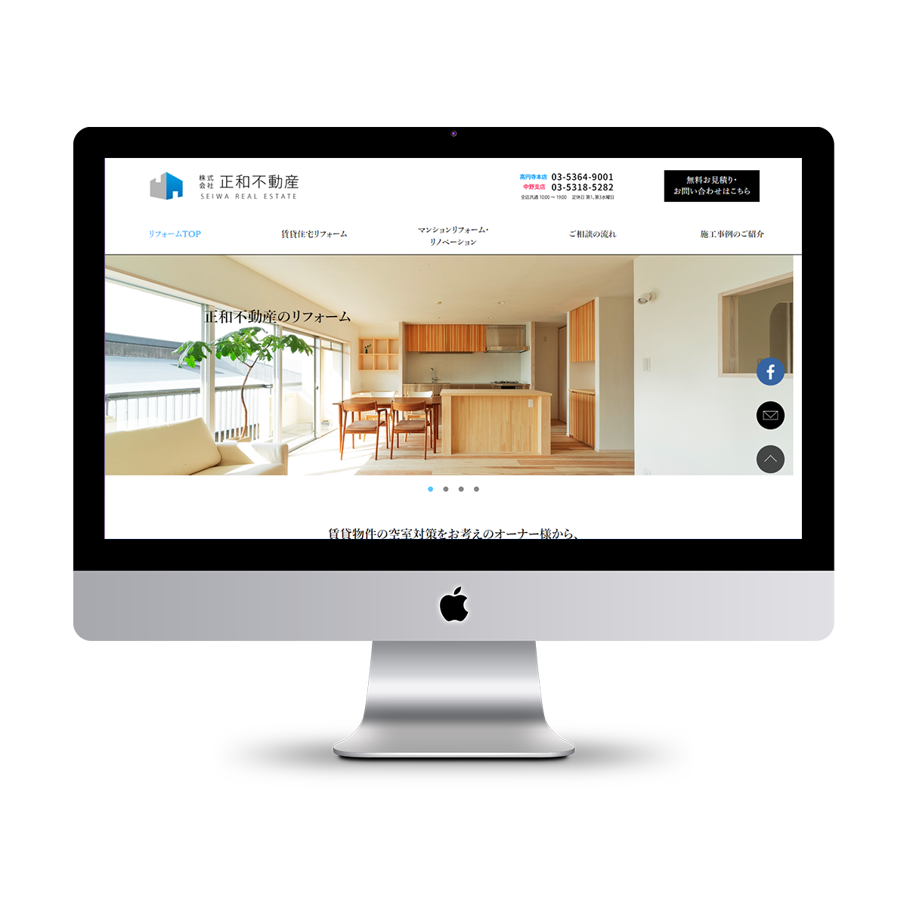
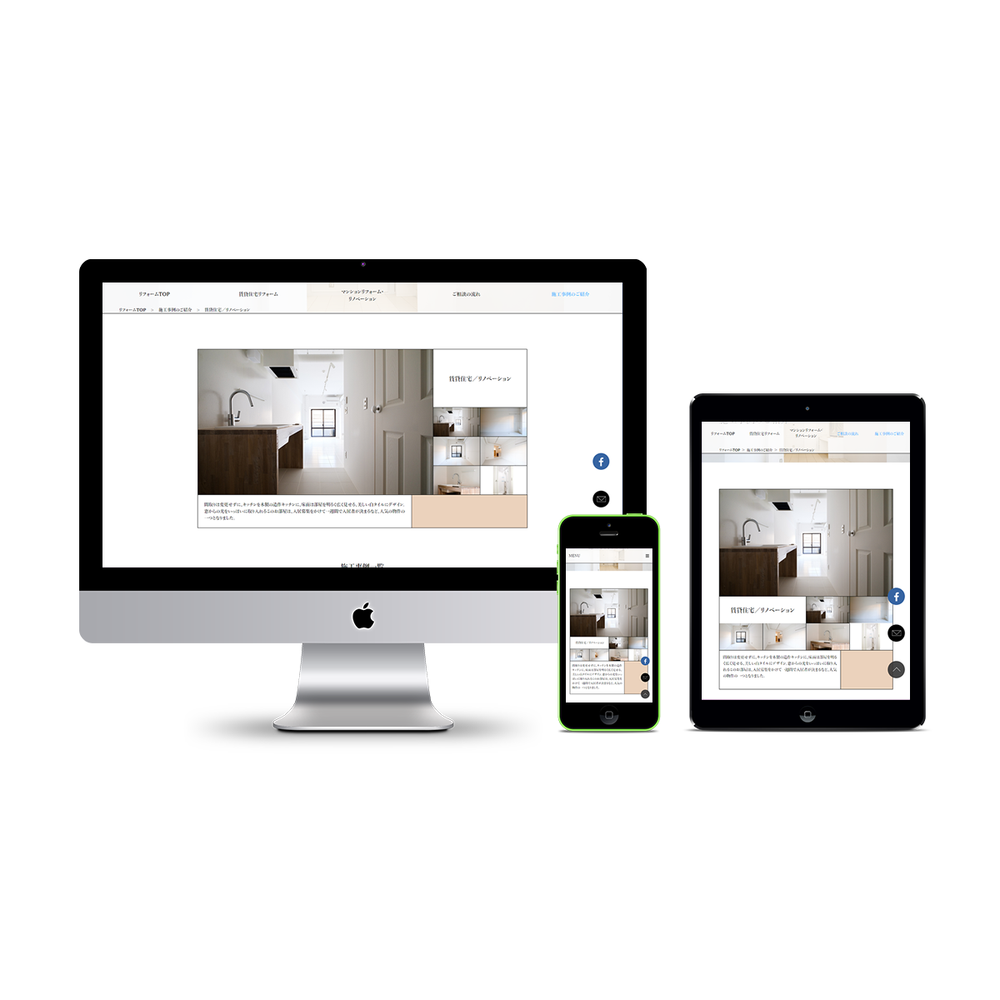
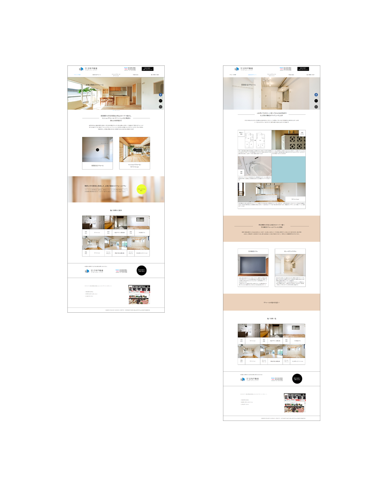

株式会社正和不動産リフォーム(仮) webサイト
- ・担当範囲
- 企画 / ディレクション / サイトデザイン / 画像加工 / コーディング / テキスト作成 / jQuery実装
- ・制作時間
- 企画 18/h デザイン制作 30/h コーディング 24/h 制作時期：2017/10/3～2017/10/23
http://toruotani.com/test/seiwa/index.html
―
概要
クライアントは高円寺の不動産会社様。不動産の管理・売買だけでなく物件のリフォーム事業なども行っており、今回は現在運用中のwebサイト内に設置されているリフォーム事業の紹介ページを独立したwebサイトとして構築し直し、リフォーム事業の受注増加・認知向上を目的としたリフォーム部サイトの制作依頼を頂いた。
但し、今回制作したwebサイトは訓練校の修了制作として制作を行った。そのため期間中にクライアントとのヒアリングが十分に出来ず、画像やテキストはこちらで用意し、本サイト制作に向けたサンプルのサイトとして制作させて頂いた。
なお現在は、このwebサイトを実際にクライアントに提案しご納得頂けたため、さらに内容等を詰めるため打ち合わせを重ねつつ、本サイト開設に向けて改めて制作を行っている。